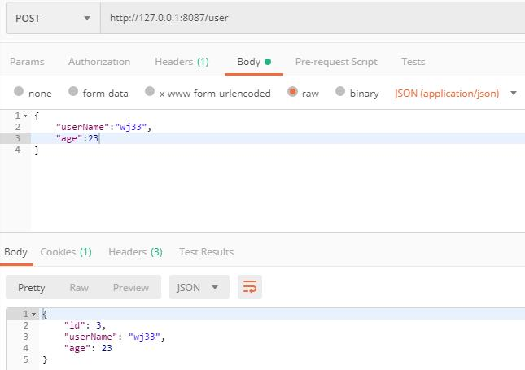
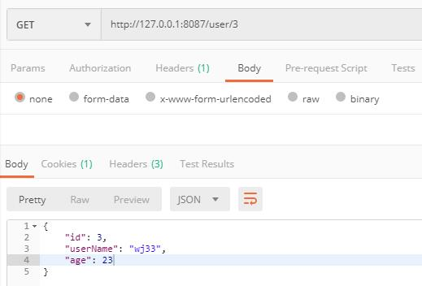
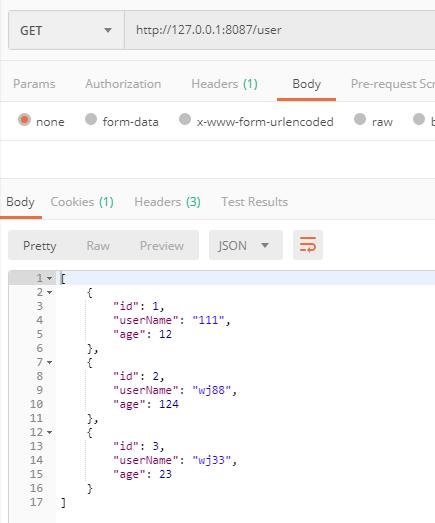

Hibernate与Mybatis共存 Jul 24, 2019 | wangjun 开发框架
前言
框架本身没有对错一说，只有适合和更适合项目的选择。
Hibernate封装了很多有用的API给开发者，降低了操作数据库的难度和复杂度，同时也减少了模板代码的数量，但Hibernate留给开发者可操作的空间相对Mybatis少了很多。
Mybatis框架使用起来很灵活，开发者可以自定义查询语句，但增加了模板代码的数量，看起来没有Hibernate那么便捷。
开发环境
JDK : JDK 1.8.x及以上版本。
Maven : Maven 3.x或更高版本。
IntelliJ IDEA 2019。
MySQL 5.7。
搭建项目
引入依赖
Spring Boot项目。
加入Spring Data JPA和Mybatis两个ORM框架的依赖包。
Hibernate是一个JPA标准的实现，尔Spring Data JPA是一个JPA数据访问抽象，通过Spring Data JPA，可以轻松使用Hibernate框架。
pom.xml如下：
1 2 3 4 5 6 7 8 9 10 11 12 13 14 15 16 17 18 19 20 21 22 23 24 25 26 27 28 29 30 31 32 33 34 35 36 37 38 39 40 41 42 43 44 45 46 47 48 49 50 51 52 53 54 55 56 57 <?xml version="1.0" encoding="UTF-8"?> <project xmlns ="http://maven.apache.org/POM/4.0.0" xmlns:xsi ="http://www.w3.org/2001/XMLSchema-instance" xsi:schemaLocation ="http://maven.apache.org/POM/4.0.0 http://maven.apache.org/xsd/maven-4.0.0.xsd" > <modelVersion > 4.0.0</modelVersion > <parent > <groupId > org.springframework.boot</groupId > <artifactId > spring-boot-starter-parent</artifactId > <version > 2.1.6.RELEASE</version > <relativePath /> </parent > <groupId > com.wj88</groupId > <artifactId > mybatishibernate</artifactId > <version > 0.0.1-SNAPSHOT</version > <name > mybatishibernate</name > <description > Demo project for Spring Boot</description > <properties > <java.version > 1.8</java.version > </properties > <dependencies > <dependency > <groupId > org.springframework.boot</groupId > <artifactId > spring-boot-starter-data-jpa</artifactId > </dependency > <dependency > <groupId > org.springframework.boot</groupId > <artifactId > spring-boot-starter-web</artifactId > </dependency > <dependency > <groupId > org.mybatis.spring.boot</groupId > <artifactId > mybatis-spring-boot-starter</artifactId > <version > 2.1.0</version > </dependency > <dependency > <groupId > mysql</groupId > <artifactId > mysql-connector-java</artifactId > <scope > runtime</scope > </dependency > <dependency > <groupId > org.projectlombok</groupId > <artifactId > lombok</artifactId > <optional > true</optional > </dependency > <dependency > <groupId > org.springframework.boot</groupId > <artifactId > spring-boot-starter-test</artifactId > <scope > test</scope > </dependency > </dependencies > <build > <plugins > <plugin > <groupId > org.springframework.boot</groupId > <artifactId > spring-boot-maven-plugin</artifactId > </plugin > </plugins > </build > </project >
1 2 3 4 5 6 7 8 9 10 11 12 13 @Data @Table (name = "t_user" )@Entity public class User @Id @GeneratedValue (strategy = GenerationType.IDENTITY) @Column (name = "id" ) private Long id; @Column (name = "c_name" ) private String userName; @Column (name = "n_age" ) private int age; }
数据持久化接口
使用Spring Data JPA来完成写操作。
使用Mybatis来完成读操作。
因为JPA只负责写操作，所以直接继承并使用JpaRepository提供的API即可，不需要额外的定义其他的接口方法。
1 2 3 4 5 6 7 8 9 10 11 12 13 14 15 16 17 public interface UserJpa extends JpaRepository <User ,Long > } @Mapper @Component public interface UserMapper @Results ({@Result (property = "id" , column = "id" ), @Result (property = "userName" , column = "c_name" ), @Result (property = "age" , column = "n_age" )}) @Select ("select * from t_user u where id=#{id}" ) User selectById (Long id) ; @Results ({@Result (property = "id" , column = "id" ), @Result (property = "userName" , column = "c_name" ), @Result (property = "age" , column = "n_age" )}) @Select ("select * from t_user" ) List<User> selectAll () ; }
1 2 3 4 5 6 7 8 9 10 11 12 13 14 15 16 17 18 19 20 21 22 23 24 25 26 27 public interface IUserService User save (User user) ; User selectById (Long id) ; List<User> selectAll () ; } @Service public class UserServiceImpl implements IUserService @Autowired private UserMapper userMapper; @Autowired private UserJpa userJpa; @Override public User save (User user) return userJpa.save(user); } @Override public User selectById (Long id) return userMapper.selectById(id); } @Override public List<User> selectAll () return userMapper.selectAll(); } }
1 2 3 4 5 6 7 8 9 10 11 12 13 14 15 16 17 18 19 @RestController @RequestMapping ("/user" )public class MyController @Autowired private IUserService userService; @PostMapping public User save (@RequestBody User user) return userService.save(user); } @GetMapping ("/{id}" ) public User findOne (@PathVariable long id) return userService.selectById(id); } @GetMapping () public List<User> findAll () return userService.selectAll(); } }
配置数据库信息 1 2 3 4 5 6 7 8 9 10 11 12 13 server.port=8087 spring.datasource.driverClassName=com.mysql.jdbc.Driver spring.datasource.url=jdbc:mysql://192.168.12.33:3306/hn_swt?useUnicode=true&characterEncoding=UTF-8 spring.datasource.username=root spring.datasource.password=6789@jkl spring.jpa.database=mysql spring.jpa.show-sql=true spring.jpa.generate-ddl=false spring.jpa.hibernate.ddl-auto=update #org.hibernate.dialect.MySQLDialect spring.jpa.database-platform=org.hibernate.dialect.MySQL5Dialect
Postman测试 

